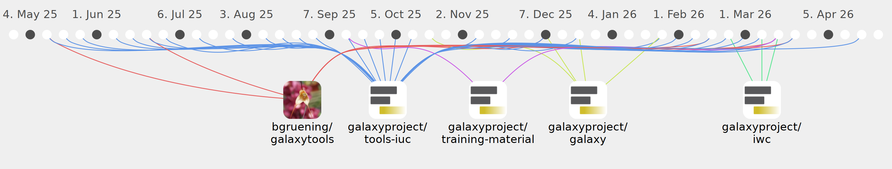

SaimMomin12

Commits all-time: 87
Commits last year: 87

(57)
- f93edeb
- 20bce2a
- dabf62d
- 17acbca
- 1f0df31
- 8e54473
- 3308162
- 01e7e08
- 203375a
- d754458
- a9f99c5
- edb9fd7
- 908fb91
- b8bc892
- 252f4cc
- 162c595
- 57fa4dc
- 5fd8f13
- b8a25ed
- e2b7ca3
- 7905b3e
- dbdc7c7
- 1bb40ad
- 13aa776
- cbb56e0
- 4763703
- 025282d
- 0d2b1b7
- f8c32a3
- b890cd8
- 05ce3d2
- 7632986
- cd59ba2
- 798dbc0
- 93309cf
- 1c43753
- 1f2a483
- 9a01ed3
- f1e9103
- a4507a9
- 0edd160
- 9c89046
- 8651f9f
- 14af8cd
- 7e43aa8
- f54b9f9
- f8e09b2
- b262f05
- cde10f6
- 4ac519d
- 14601b6
- d4a17f8
- 39637aa
- a05b37c
- af4dc69
- a529d26
- c526834
(27)
(2)
(1)